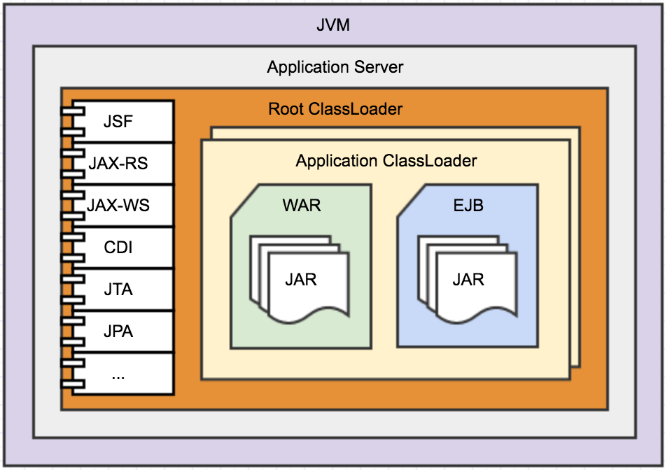

Unmounting a Spring Boot Application
- Micro+service
- Spring-Boot
- Consul + HAProxy
How to design a good application?
let's think!
- how many users should it support?
- expected throughput? (requests/second)
- what happens if it needs to expand?
- what happens if it collapse?
- what about the incremental evolution?
MVC? again?
Just put it in a cluster!
... and after a few years of development ...
voilà!
Let's talk about Microservice
What heck is a Microservice?
“Small Autonomous services that work together, modelled around a business domain”
Sam Newman
-
Autonomous
- afford itself to run without others -
Scalable
- easily replicable -
Configurable
- dynamically adjustable -
Resilient
- recoverable fixing itself
Where did you already saw this before???
Finally... Spring Boot
Spring Boot makes it easy to create stand-alone, production-grade Spring based Applications that you can "just run". We take an opinionated view of the Spring platform and third-party libraries so you can get started with minimum fuss. Most Spring Boot applications need very little Spring configuration.
- A self executable JAR with dependencies...
- that bootstrap an ApplicationContext...
- load and bind configuration to Beans...
- auto configure modules with conditional Beans present in the classpath...
- and manage the application lifecycle.
SPRING INITIALIZR
Let's create a new project!
command line
mkdir ac4talk-web-sample && cd ac4talk-web-sample && \
curl -s https://start.spring.io/starter.zip \
-d type=gradle-project \
-d bootVersion=1.5.3.RELEASE \
-d groupId=com.avenuecode.talk.spring.boot \
-d style=web \
-d style=jersey \
-d style=actuator \
-H 'accept-encoding:gzip' | tar -xzvf -
Running through Gradle
./gradlew clean build bootRun
Running the jar
java -jar build/libs/*.jar --management.security.enabled=false
gradle
buildscript {
ext { springBootVersion = "1.5.3.RELEASE" }
repositories { mavenCentral() }
dependencies { classpath("org.springframework.boot:spring-boot-gradle-plugin:${springBootVersion}") }
}
apply plugin: "java"
apply plugin: "eclipse"
apply plugin: "org.springframework.boot"
version = "0.0.1-SNAPSHOT"
sourceCompatibility = 1.8
repositories { mavenCentral() }
dependencies {
compile("org.springframework.boot:spring-boot-starter")
testCompile("org.springframework.boot:spring-boot-starter-test")
}
./gradlew bootRun
1. self executable jar
@SpringBootApplication
public class DemoApplication {
public static void main(String[] args) {
SpringApplication.run(DemoApplication.class, args);
}
@Bean
public ApplicationRunner applicationRunner() {
return (arguments) -> {
System.out.println("42");
};
}
}
Application Server Architecture

Spring Boot Architecture

JAR Manifest
Manifest-Version: 1.0
Start-Class: com.example.DemoApplication
Spring-Boot-Classes: BOOT-INF/classes/
Spring-Boot-Lib: BOOT-INF/lib/
Spring-Boot-Version: 1.5.3.RELEASE
Main-Class: org.springframework.boot.loader.JarLauncher
spring dependencies (~6mb)
# Spring
spring-aop 4.3.7.RELEASE.jar
spring-beans 4.3.7.RELEASE.jar
spring-context 4.3.7.RELEASE.jar
spring-core 4.3.7.RELEASE.jar
spring-expression 4.3.7.RELEASE.jar
# Spring Boot
spring-boot 1.5.3.RELEASE.jar
spring-boot-autoconfigure 1.5.3.RELEASE.jar
spring-boot-starter 1.5.3.RELEASE.jar
spring-boot-starter-logging 1.5.3.RELEASE.jar
2. Bootstrap an ApplicationContext
public ConfigurableApplicationContext run(String... args) {
//...
ApplicationArguments applicationArguments = new DefaultApplicationArguments(args);
ConfigurableEnvironment environment = prepareEnvironment(listeners,applicationArguments);
Banner printedBanner = printBanner(environment);
context = createApplicationContext();
analyzers = new FailureAnalyzers(context);
prepareContext(context, environment, listeners, applicationArguments, printedBanner);
refreshContext(context);
afterRefresh(context, applicationArguments);
listeners.finished(context, null);
if (this.logStartupInfo) {
new StartupInfoLogger(this.mainApplicationClass).logStarted(getApplicationLog(), stopWatch);
}
return context;
//...
}
3. Configuration to Beans
Load configuration to a ConfigurableEnvironment
- Command line argumets
- Java System properties `(-Dfoo=bar)`.
- OS environment variables.
- Profile-specific or application properties `(application-{profile}.properties and/or YAML)`
See the documentation for a more detailed list.
Sample configuration as YAML
spring:
application:
name: my-sample-application
jersey:
applicationPath: /api
type: SERVLET
filter:
...
init:
...
ConfigurableEnvironment
@Bean
public ApplicationRunner runner(@Value("${foo}") String foo) {
return (arguments) -> {
System.out.printf("foo: %s %n", foo);
};
}
echo "foo: 1" > application.yml && \
SPRING_APPLICATION_JSON='{"foo":2}' \
FOO=3 \
java -jar -Dfoo=4 \
app.jar --foo=5
Old style!
public class JerseyProperties {
@Value("${spring.jersey.applicationPath}")
String applicationPath;
@Value("${spring.jersey.type:SERVLET}")
Type type;
// ?
Filter filter = new Filter();
// ?
Map<String, String> init = new HashMap<String, String>();
//...
Bind it to structured objects
@ConfigurationProperties("spring.jersey")
public class JerseyProperties {
@NotNull
String applicationPath;
Type type = Type.SERVLET;
Filter filter = new Filter();
Map<String, String> init = new HashMap<String, String>();
//...
4. Spring Auto Configuration
@Inherited
@SpringBootConfiguration
@EnableAutoConfiguration
@ComponentScan(excludeFilters = {
@Filter(type = FilterType.CUSTOM, classes = TypeExcludeFilter.class),
@Filter(type = FilterType.CUSTOM, classes = AutoConfigurationExcludeFilter.class) })
public @interface SpringBootApplication {...}
Spring will scan Beans for you!
Everything annotated with @Configuration is also a bean!
Spring-Boot already have a lot of configurations for a bunch of libraries.
@Conditions*
Simple Spring @Configurations with @Conditional*
@Configuration
@ConditionalOnClass(DiscoveryClient.class)
@EnableDiscoveryClient
public class ConsulAutoConfiguration {}
Auto detect configuration on classpath...
META-INF/spring.factories
org.springframework.boot.autoconfigure.EnableAutoConfiguration=\
com.ac4talk.core.service.resource.ResourceAutoConfiguration,\
com.ac4talk.core.service.model.ModelConverterAutoConfiguration,\
com.ac4talk.core.service.cloud.ConsulAutoConfiguration
Let's play with it
- Service Discovery
- Health Checking
- KV Store
- Multi Datacenter
HAProxy is a free, very fast and reliable solution offering high availability, load balancing, and proxying for TCP and HTTP-based applications.
git clone https://github.com/adolfojunior/ac4talk-store.git
cd ac4talk-store
# consul
docker-compose up -d consul
# haproxy
docker-compose up -d haproxy
# services
docker-compose up -d promotion product cart
Questions?
Thank you!